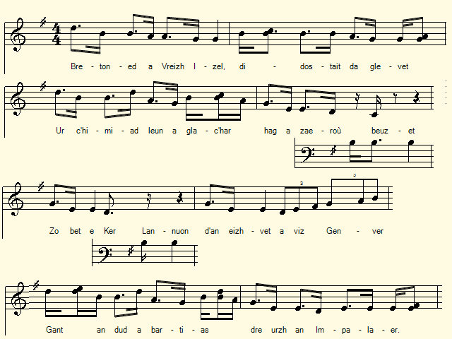

Paotred Lannuon
Les gars de Lannion
The Lannion lads
Chant collecté par Théodore Hersart de La Villemarqué
dans le 2ème Carnet de Keransquer (pp. 86-87).

"Paotred Lannion"
Arrangement MIDI Christian Souchon (c) 2020
|
A propos de la mélodie Cette gwerz n'a été collectée que par La Villemarqué. Le rythme de la mélodie évoquait peut-être celui du tambour qui sonnait le départ des conscrits comme il est dit à la strophe 3. A propos du texte Cette chanson a trait à l'une des dernières levées en masse qui suivirent la désastreuse campagne de Russie. Comme il est dit à la 8ème strophe, elle eut lieu en janvier 1813: Le 11 janvier un senatus-consulte décidait que 350 000 hommes seraient prélevés pour compenser les pertes énormes.subies par la «Grande armée» dont les effectifs étaient passés de 450 000 à 40 000 hommes. La chanson anticipe également la reprise des hostilités (la Prusse déclara la guerre à la France le 17 mars, suivie de l'Autriche, le 10 août), la défaite à la bataille de Leipzig le 19 octobre et l'abdication de Napoléon, l'année suivante, le 13 avril. Une nouvelle levée de 160 000 hommes eut lieu en octobre 1813: les «Marie-Louise» étaient tous de jeunes soldats encore inexpérimentés lesquels cependant, dirigés par l'Empereur, l'emportèrent sur les forces austro-prussiennes à Saint-Dizier et Brienne en janvier 1814. La principale raison de la résistance à la conscription est donnée à propos de la chanson des Les quatre charpentiers : elle éloignait de leurs foyers, pendant de nombreuses années, des jeunes gens qui, souvent, ne parlaient pas le français. Malgré sa dernière strophe guerrière qui tranche avec les précédentes (et qui a donc pu être ajoutée ultérieurement), cette chanson pourrait être le motif de l'emprisonnement du chanteur, un nommé Yann-Job (fr. Jean-Joseph) qui l'avait chantée à Amiens, comme l'a noté en français La Villemarqué après le titre "Paotred Lannuon" (Les gars de Lannion). |
About the tune This gwerz was collected by La Villemarqué only. Maybe the rhythm of the tune imitated the beat of the drums when the conscripts were to leave, as stated in stanza 3. About the lyrics: This song is about one of the last levies of conscripts after the disastrous campaign of Russia . As mentioned in the 8th stanza, it took place in January 1813: On January 11th the Senate had agreed 350.000 men to be levied to make good for enormous losses. The "Great army" had shrunk from 450,000 to 40,000 men! The song also anticipates the resumption of hostilities (Prussia declared war on France on March 17th, followed by Austria on August 10th), the defeat at the Battle of Leipzig on October 19th and Napoleon's abdication the next year, on April 13th. A new levy of 160,000 men had taken place in October 1813: the so-called "Marie-Louise" comprising all still inexperienced young soldiers who, headed by the Emperor, defeated the Austro-Prussian forces in Saint-Dizier and Brienne in January 1814. The chief reason for the resistance to conscription is addressed in connection with the song of The four carpenters: it removed from their homes, for many years, young people who often did not speak French . In spite of its warlike last stanza which strongly contrasts with the foregoing (and might therefore have been added at a later stage) this song may have caused the imprisonment of the singer, a named Yann-Job (French, Jean-Joseph), who sang it in Amiens, as recorded in French by La Villemarqué after the title "Paotred Lannuon" (The Lannion lads). |
|
BREZHONEK page 86 Paotred Lannuon Chanté par Yann Job. (Jean-Joseph) = En prison. Mis en prison lâavait chanté étant soldat, à Amiens. 1. Bretoned a Vreizh Izel, didostait da glevet Ur câhimiad leun a glac'har hag a zaeloù beuzet Zo bet e Ker Lannuon dâan eizhvet a viz Genver. Gant an dud a bartias dre urzh an Impalaer. 2. Kriz a vije ar galon, ar galon kriz, na ouelje E-barzh ar ger Lannuon, piv bennak a vije Ouzh o gwelet arenket ha prest da bartiañ Seizh kant deuz ar gonscriet, tud eus ar re gaerañ. 3. Pa sko an taboulinoù da dant holl asamblez, An tad ha bugel deut da kimiadiñ An tad ha bugel deut da partiañ Ken a reizhañ etrezo o c'halon da rannañ. 4. An tad a lar dâar bugel: - Dalcâh memor da Zoue Pehini da gonduo an noz evel an deiz. Ha dalc'h memor ivez dâar Mamm ha dâan Itron Hag a teuy dâho tiwall d'eus pep gwall a galon, p. 87 / 45 5. - A-dra sur, ma zadig paour, m'em-bo soñj anezhañ, N'hellan na komz, na bale hep sikour digantañ Kemer a rin ma Salver evit me câhonduiñ Hag ar Verc'hez glorius da zont d'am brezerviñ. __ 6. Kement a oa war ar plas, ma oant o partialañ, Barzh ar ger a Lannuon emaint holl da ouelañ, Hag o klevout en ur vouezh o tont da lavaret : - Kenavo, tadoù, ma mammoù, kenavo, joaiusted! - 7. Goude ma oant diblaset,ha pe oant aet en hent, Graet gante o kimiadoù, dimeus o holl gerent, Ha deut da 'n-em gonfortet, dre drugarez Doue Ha da gemer joaiusted, betek korf an arme. 8. ⦠evel ma'z eo glevet, ⦠nemet gwelet an douar o ruilhat gant o gwad . E-barzh ar bloavez trizek, dimeus ar miz Genver A oa red em diblasa ha mont trezek ar ger Trezek ker a Sant Brieg Doue da câhonduo. 9. - Tadoù, mammoù glacâharet deuet da 'n-em gonfortiet Dont a rey ho pugel souden dâho kwelet Ar brezel a echuo dibenn nemeur amzer Hag ar re vo e buhez a zistroo ouzh ker. 10. Pedomp Doue asambles en noz evel en deiz Vit hor breudeur kristen pe-re zo en armé Vit m'hallint emgannan ha gounit ar viktoar War an holl en'bourien er mor hag en douar. KLT gant Christian Souchon |
TRADUCTION FRANCAISE page 86 Paotred Lannuon Chanté par Yann Job. (Jean-Joseph) = En prison. Mis en prison lâavait chanté étant soldat, à Amiens. 1. Enfants de Basse-Bretagne, venez m'entendre chanter Les adieux lamentables, les yeux inondés de pleurs Qu'à Lannion à leurs proches, le huit du mois de janvier. Firent les gars qui partent sur l'ordre de l'Empereur. 2. N'eût pu retenir ses larmes devant tant de désespoir A Lannion nul être, sauf un insensible coeur, Voyant rangés en colonnes, prêts à prendre le départ Sept cents gars de Bretagne, du pays la fine fleur. 3. Voilà les tambours qui grondent, signifiant à l'assemblée Que le départ approche et qu'il faudra se séparer Le fils embrasse le père, les paupières embuées. Leurs derniers mots se perdent parmi ces tambours guerriers. 4. Le père au fils recommande: - Conserve avant tout la Foi! Le jour, la nuit, ton guide, dans quelque lieu que tu sois! Et n'oublie pas que la Vierge qui fut la mère de Dieu, A qui la prie accorde soutien, appui généreux. p. 87 /45 5. - Soyez assuré, mon père, que je m'y conformerai: Ni geste, ni parole qui ne s'en inspirera. Oui, la Vierge glorieuse saura bien me préserver. Oui, le Sauveur du monde sera mon guide ici-bas. 6. Et la troupe sur la place alors se met en mouvement. Tout Lannion résonne d'amères lamentations. Une voix couvre les autres et c'est un cri déchirant - Adieu, pères et mères et toutes satisfactions! - 7. La place à présent est vide et la troupe est en chemin. Plus d'adieux qui tiennent, plus d'amis, plus de parents! Hormis la miséricorde de Dieu, plus aucun soutien. Tes seules joies, pauvre homme, viendront de ton régiment. 8. Or tes seules joies, pauvre homme, seront, à ce que l'on dit, De voir rougir la terre du sang qui sera versé. En l'an mille huit cent treize, pendant le mois de janvier On décida d'urgence d'éloigner tous ces conscrits. Saint-Brieuc les accueille: c'est là que Dieu les conduit. 9. - Malheureux pères et mères, vous pouvez vous consoler: Bientôt sonnera l'heure où vos chers enfants reviendront. Elle prendra fin la guerre, dans peu de temps, je le sais. Ceux qui seront en vie rentreront à la maison. 10. Nuit et jour, prions ensemble, prions notre Créateur Pour ces chrétiens, nos frères, qui combattent aux armées! Qu'ils puissent livrer bataille, qu'ils nous reviennent vainqueurs Sur l'océan, sur terre de ces hordes conjurées! Traduction: Christian Souchon (c) 2020 |
ENGLISH TRANSLATION page 86 Paotred Lannuon As sung by Yann Job. (John-Joseph) = In jail. Imprisoned in Amiens [because] he sang [it, though] enlisted in the army. 1. Bretons of Lower Brittany, all of you, approach to hear A distressing song of farewell that will drown your eyes in tears: On the eighth of January, farewell was bid in Lannion To those who were ordered to march by the Emperor's injunction. 2. Cruel indeed the heart would have been, cruel indeed, that had not cried, In the city of Lannion and to the sight his eyes had dried: All in ranks and rows arranged and to march away ready, Seven hundred handsome fellows, the fine flower of the country. 3. When the drums started beating as a warning it made them cry, Father and son come together once more just to say goodbye. Father and son come together knew it was time to depart Loud sounds of drums a-beating did break everybody's heart. 4. To his son the father commends: - You shall not forget to pray. Your God, wherever you may be, shall be your guide night and day. And remember that the mother of God, the holy Virgin From all evils will protect you and from every misfortune. p. 87 /45 5. - Do not worry my dear father, that 's a thing I'll keep in mind Not a step, not a sentence that my faith has not inspired I'll take as a guide my Saviour, everywhere to conduct me And the most glorious Virgin who my protectress will be. 6. All those on the town square, who saw the conscripts who left In the city of Lannion, started crying, of hope bereft Hearing voices loudly shouting, still increasing their distress - Farewell fathers, farewell mothers, farewell joy and happiness! - 7. After they had left the town square and were well on their way, Having said to all their parents duly "goodbye and farewell", Now with God's help they were to find comfort and satisfactions In the army they had joined, among their fight companions. 8. These were no great expectations. The only thing to entertain A conversation was the earth that with their own blood would get stained. In eighteenhundredthirteen, in the month of January They had to take new quarters and make for another city It was to Saint-Brieuc town that they were led by God's pity. 9. - Fathers and distressed mothers, I announce you a great boon: Your child that has just gone away, he will come back to see you soon. For I know for sure that this war will come to an end presently And whoever is still alive will return to their family. 10. Let's pray to God, all together, let's pray to Him day and night He may help our Christian brothers who are in the army to fight He may help them fight gallantly and to victory lead their hand Over all of our enemies, everywhere at sea and on land! - Translated by Christian Souchon (c) 2020 |
NOTES:
| [1] Il n'y a pas qu'en Bretagne que l'"épopée napoléonienne" inspira des chants de protestation contre la conscription. Témoin ce chant fameux du Languedoc qui date de 1810, quand l'Empire était à son apogée. | .[1] As evidenced by this famous song from Languedoc, it was not only in Brittany that Napoleon's "epic venture" inspired songs of protest against conscription. This songs dates to 1810, when the Empire was at its peak. |
"Le conscrit de l'an 1810" interprêté par Alain Charrié (+2014)
CD "Anthologie de la chanson de la chanson française: Conscrits, soldats et déserteurs", EPM/ADES, 1996. Accompagnée au hautbois languedocien.
"Paotred Lannuon". Arrangement Ch. Souchon - MP3
"Les Chouans selon Villemarqué", un livre au format A4.  Cliquer sur le lien ou sur l'image ci-dessus |